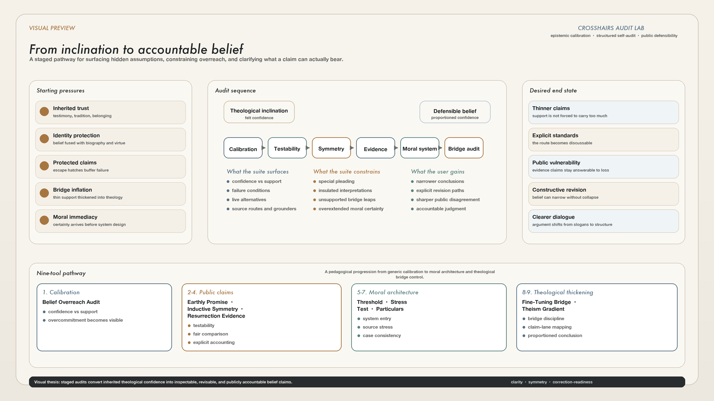

Reassess the belief
Bring a Christian claim into view without treating familiarity, sincerity, or community confidence as sufficient evidence by itself.
Crosshairs audits
Focused reasoning tools that help Christians reassess what they believe, why they believe it, and where their belief web may be carrying unresolved tensions or unsupported leaps.
Public URL https://xhairs.comPurpose
Bring a Christian claim into view without treating familiarity, sincerity, or community confidence as sufficient evidence by itself.
Distinguish what might be true from what the current evidence, argument, or experience can responsibly substantiate.
Surface gaps in support, bridge-premise jumps, and places where one part of the belief web strains another.
Available audits
Start with a pathway if you want guidance, then browse the full catalog below when you want to jump straight to a specific pressure point. If design or theism is being argued through fine-tuning, begin with the Fine-Tuning Bridge Audit before opening the wider gradient.
Pathways
New users can begin with the sequence that matches the actual pressure point under debate instead of guessing from a flat grid.
Pathway 01
Use this route when the first concern is that certainty, commitment, or practical risk seems to be outpacing the support the claim can carry.
Pathway 02
Use this route when fine-tuning is being asked to carry more than a thin design hunch and the argument is already leaning toward life-purpose, human-purpose, or theism.
Pathway 03
Use this route when a claim is being presented as a worldly fact that should stay open to ordinary checks, comparisons, and rival explanations.
Pathway 04
Use this route when the dispute is moral. The sequence now moves step by step from minimum architecture to system pressure to concrete case handling.
Full catalog
The same tools are still available individually. They stay ordered from the quickest entry point to the most layered assessment, with difficulty tags showing how much setup or conceptual load each audit asks you to carry.
Live audit
Uses a fair-die calibration drill, a bridge metaphor, and a ruin simulator to show what happens when confidence outruns the support a claim is perceived to have.
Preliminary to Theism Gradient
Audits the bridge from fine-tuning to design, life-purpose, human-purpose, and theism by separating life-permitting from life-abundant conclusions and checking whether prior commitments, beach-analogy expectations, and target ambiguity are doing hidden work.
Preliminary: use this before Deism-Theism Gradient whenever fine-tuning is part of the route into design or theism.
Live audit
Maps claims about prayer, healing, protection, future knowledge, wisdom, behavior, morbidity, and longevity onto a live field to show whether they are open to robust testing or insulated by excuses.
Companion audit
Presents invented holy-book promises about protection, healing, prayer, wisdom, prophecy, behavior, provision, morbidity, and longevity, then asks where each promise stops being a real promise once public outcomes stay flat.
Designed as a companion to Earthly Promise Test Field: remove biblical familiarity first, then compare the collapse line with familiar Christian promise claims.
Live audit
Tests whether an apologetic argument accepts one inductive pattern while dismissing relevantly similar patterns that count against the same conclusion.
Live audit
Tests resurrection and miracle claims with accessible baseline confidence, evidence comparisons, independence checks, alternative explanations, and a live audit-pressure score.
Preliminary checklist
A short intake checklist that asks whether an alleged Christian moral system has actually supplied the minimum architecture of a moral system, or whether it is still functioning as a rule source, intuition set, or practical framework.
Preliminary: use this before the advanced Moral System Stress Test.
Advanced follow-up
Takes the threshold result into a fuller system-level pressure test, asking whether Christian morality survives counterfactuals, authority checks, disagreement strain, and collapse risks.
Continues where Moral System Threshold leaves off.
Concrete follow-up
Pushes the larger moral system into concrete Christian moral judgments, then compares those grounders with how disagreement is explained across severe, ordinary, sexual, civic, and generosity cases.
Layered follow-up
Rates 50 Christianity-focused claims across a deism-to-Christian-theism gradient, then surfaces substantiation gaps, dependency tensions, category profiles, and an AI-ready report.
Best used after Fine-Tuning Bridge Audit when design, life-purpose, or human-purpose claims are part of the case.
Question-led challenge
These prompts are not ad copy for the tools. They are short, question-led pressure tests aimed at familiar apologetic habits, each with a different methodological focus.
Focus: calibration before doctrine
Many apologetic disputes stall because confidence is quietly treated as if it were itself part of the evidence. The issue here is not whether a belief is comforting, central, or tradition-backed, but whether the confidence attached to it is proportioned to the support the apologist can actually name. That is why this is the right opening pressure point. Before arguing about miracles, scripture, or morality, it is worth asking whether the same confidence would look intellectually responsible in another domain with similarly thin support. If a belief posture would look reckless in medicine, engineering, or finance, why should it become praiseworthy once it is imported into theology?
Tool link: Belief Overreach Audit
Focus: bridge discipline
The fine-tuning argument often begins with a narrow point about life-permitting conditions and then quietly expands into design, purpose, human significance, and theism. The problem is not that those richer conclusions are impossible. It is that the bridge between them is often left implicit, as if a finely tuned universe were already halfway to the God of Christian devotion. But a universe that permits observers is not obviously a universe aimed at humans, still less one aimed at covenant, incarnation, or redemption history. The key challenge is to slow the slide from a thin cosmic observation to a much thicker theological conclusion and ask exactly where each extra layer enters.
Tool link: Fine-Tuning Bridge Audit
Focus: public vulnerability to correction
Christian apologists often insist that Christianity is not merely existentially meaningful but publicly true. If so, then at least some everyday Christian claims should remain exposed to ordinary checks. Prayer outcomes, healing claims, providential protection, guidance, wisdom, and predictive claims all become relevant here. The pressure point is not whether divine action must be mechanically predictable. It is whether a claim can ever be wrong in a recognizable way. When successes are counted as evidence but failures are dissolved into mystery, timing, hidden sin, or unknown divine purposes, a claim may keep devotional power while losing public evidential force.
Tool link: Earthly Promise Test Field
Focus: role-reversal fairness
Christian apologetics frequently relies on a selective generosity that is easy to miss from the inside. Friendly testimony is read at full strength, while rival testimony is met with suspicion, naturalizing alternatives, or demands for a stricter evidential threshold. The key question is not whether Christian claims can survive scrutiny, but whether the same inferential rules are being applied across cases. If conversion stories, miracle reports, cumulative-case arguments, and transformed lives are evidentially weighty when they point toward Christianity, why do they become weak or suspect when they support another tradition? A method that only works in one doctrinal direction begins to look less like public reason and more like conclusion protection.
Tool link: Inductive Symmetry Audit
Focus: explicit inferential accounting
The resurrection is often presented as Christianity's decisive public anchor, yet the case depends on a cluster of controversial assumptions: source quality, witness dependence, disputed baseline facts, alternative explanations, and an enormous prior hurdle for bodily resurrection. The issue is not whether the resurrection is theologically central. It is whether apologists have been sufficiently candid about how much evidential work is being asked of a limited ancient record. A hypothesis can feel rhetorically powerful and still be probabilistically strained if its prior is very low, if the evidence is less independent than advertised, or if the apologetic framing prematurely narrows the live alternatives.
Tool link: Resurrection Evidence Audit
Focus: minimum moral architecture
Christian apologists often speak as if Christianity obviously supplies a moral system, but that confidence can skip a prior question: what does a moral system need in order to count as a system at all? Rules, virtues, and appeals to divine approval are not enough by themselves. A serious moral framework needs some account of truth-makers, authority, access, conflict resolution, correction, and application beyond the believing community. If those elements remain vague, then “Christian morality” may function more like a trusted source of moral language than like a sufficiently articulated framework capable of carrying later truth claims.
Tool link: Moral System Threshold
Focus: source integration under pressure
Even if a Christian moral framework initially appears complete, the next question is whether it remains coherent when its components are forced into contact. Apologists often appeal to God's nature, divine commands, conscience, scripture, church tradition, natural law, and human flourishing in the same conversation. That can sound intellectually rich, but it can also hide unresolved rivalry between sources. If one route supplies authority, another supplies content, and another supplies correction, the framework may work only because the user can borrow strategically from whichever source is most convenient in the moment. The challenge here is not whether moral language can be produced, but whether the system has stable internal rules.
Tool link: Moral System Stress Test
Focus: case-level consistency
General moral slogans are easy to defend because they remain abstract and morally flattering. Pressure rises when apologists must justify particular verdicts about slavery, genocide, punishment, war, sexuality, reproductive ethics, hierarchy, or the treatment of outsiders. At that level, disagreements among Christians reveal that shared slogans do not automatically generate shared judgments. The deeper question becomes: what is actually doing the work in the concrete case? Is it scripture, divine nature, tradition, intuition, social inheritance, or a shifting blend of all five? If the operative grounder changes whenever the case becomes morally difficult, then consistency may be more apparent than real.
Tool link: Moral Particulars Audit
Focus: theological thickening across a claim gradient
Apologists often move from a thin conclusion to a thick one without pausing long enough at the middle steps. A generic source of reality becomes intelligence, then purposive design, then personal agency, then moral concern, then providence, revelation, and finally the Christian God. Each step may be arguable on its own, but the final confidence is often borrowed from the earliest and least specific premises. The challenge here is to distinguish what is actually supported at each rung of the ladder from what is being quietly supplied by prior theological commitment. A serious case for a minimal creator is not automatically a serious case for incarnation, atonement, or ecclesial authority.
Tool link: Deism-Theism Gradient Audit
Visual preview
This visual preview comes from the working paper From Theological Inclination to Defensible Belief: Interactive Audits for Honest Religious Inquiry and condenses the suite's full pedagogical arc into a single landscape schematic.

Anticipated questions
These audits are designed to slow down familiar apologetic moves and make the hidden reasoning visible. The answers below clarify what the tools do, what they do not claim, and how to read their results without turning them into a new dogma.
No. They assume that claims, arguments, and confidence levels can be inspected. The tools ask whether a Christian claim has been stated clearly, whether the evidence offered for it is doing the work assigned to it, and whether similar standards are being applied when the conclusion becomes uncomfortable.
A Christian user can use Crosshairs as a repair tool: lower overconfident claims, strengthen weak bridges, separate devotional interpretation from public evidence, and preserve only the conclusions that survive pressure. A skeptical user can use the same outputs to ask more precise questions instead of arguing against a blur.
These are reasoning audits, not verdict machines. An audit makes assumptions, standards, dependencies, and escape hatches visible. It does not replace historical research, philosophical argument, personal reflection, or ethical judgment.
The point is to reveal where a belief web is carrying pressure. If confidence is high but personal substantiation is low, if a moral claim lacks a truth-maker, if an earthly promise refuses every clean test, or if a resurrection case needs weak alternatives to stay weak, the tool names that pressure point.
Start with the claim that is actually being debated. If the question is whether the same inductive standard is being applied on both sides, use the Inductive Symmetry Audit. If the question is whether confidence outruns personal support, use the Theism Gradient or Belief Overreach Audit. If the question is whether fine-tuning really licenses design, life-purpose, or human-purpose, start with the Fine-Tuning Bridge Audit before entering the wider gradient.
Use the Resurrection Evidence Audit for specific miracle or resurrection claims, the Earthly Promise Test Field for prayer, healing, protection, wisdom, prophecy, or longevity promises.
For morality, start with Moral System Threshold if the first question is whether someone even has a full moral system, then move to Moral System Stress Test and Moral Particulars Audit as the pressure increases.
Pressure is not the probability that a claim is false. It is a warning that the current reasoning structure is carrying more weight than the entered support can comfortably sustain. The problem may be overconfidence, missing controls, unclear standards, a weak bridge premise, or an after-the-fact explanation that protects the claim from loss.
The right response is not always abandonment. Sometimes the best response is a narrower claim, better evidence, a clearer comparison group, a stronger definition, or an admission that the conclusion should be treated as private interpretation rather than public evidence.
The scores are structured reflections of the user's inputs. They are not external facts discovered by the app. Their value comes from forcing the user to make hidden weights explicit: how strong is the evidence, how independent are the sources, how severe is the claim, how much would a clean failure matter, and which controls are being accepted or refused?
Two users can enter different assumptions and get different scores. That is not a defect. The useful question is whether each user can defend the inputs consistently when the same standard is applied to rival claims.
A result should be used as a map, not a trophy. The strongest debate use is to show the exact commitments behind a conclusion: which assumptions were entered, which comparisons were accepted, which explanations remain available, and which outcomes would count against the claim.
If someone treats the output as "the app proved you wrong," they are misusing it. A better use is: "Here is where the current version of the claim seems to rely on an unsupported bridge. Which input should change, and why?"
Comparison cases keep special pleading visible. Many claims seem powerful when viewed alone: one answered prayer, one moving testimony, one moral intuition, one historical pattern. A comparison asks whether the same kind of reasoning would be accepted when it points away from the preferred conclusion.
This is especially important in apologetics because the mind naturally protects identity-carrying beliefs. Crosshairs does not assume the preferred belief is false. It asks whether the method remains fair when the emotional direction changes.
Then the claim should be described that way. A belief can be meaningful, identity-forming, devotional, or existentially important without functioning as public evidence. Problems arise when a claim is advertised as a worldly fact but protected like a private interpretation whenever tests become inconvenient.
The audits help keep those categories separate. They do not say that private meaning has no value. They ask whether private meaning is being converted into public proof without the added support that public proof requires.
Use them to prune overclaiming. A Christian might decide that some claims should be held more modestly, that a testimony should not be used as general evidence, that a moral argument needs a clearer account of authority, or that a miracle case is personally meaningful but not strong enough to carry public confidence.
Constructive use means letting the audit improve the belief web rather than merely defending the first formulation. Stronger faith, if it is worth the name, should not require hiding weak links from view.
Use them to make objections precise. Instead of saying "that is irrational," name the exact point: the comparison group is missing, the alternative has been made artificially weak, the standard changes when the conclusion changes, or the claim has no stated failure condition.
Responsible skeptical use also means not pretending the tools settle everything. They expose structure. They do not automatically settle all historical, ethical, psychological, or metaphysical questions.
Yes. The most productive format is usually slow and concrete: choose one claim, fill the audit publicly, ask which inputs the group disputes, then revise the inputs until the disagreement is visible. The point is not to force consensus but to reveal what each side is actually relying on.
Reports and AI prompts can preserve the state of a discussion. That makes it harder for participants to move the goalposts later and easier for a teacher or facilitator to ask, "What changed between the original claim and this repaired version?"
First, decide whether the weakness belongs to the claim, the evidence, the wording, or the level of confidence. Sometimes the cleanest repair is not more argument but a smaller claim: "This is meaningful to me" instead of "This is public evidence"; "This is possible" instead of "This is established."
Second, document the repair. A good repair should reduce pressure without smuggling the original overclaim back in. If the repaired claim is more modest, that is not failure. It is intellectual cleanup.